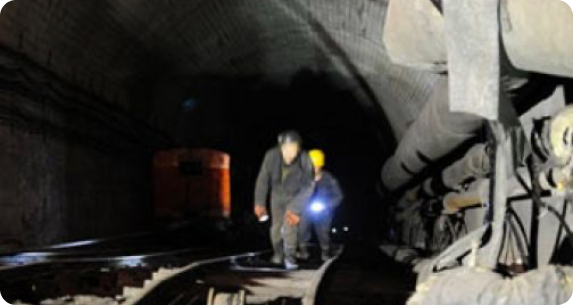
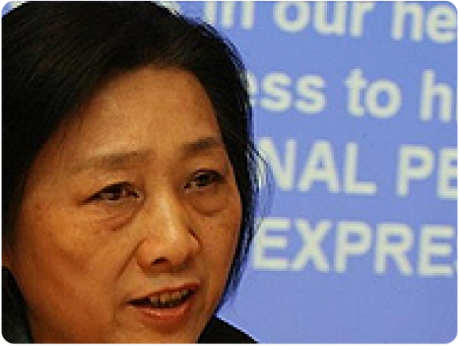

<div class="blockArticle">
  <div class="container">
    <div class="container__main">
      <div class="container__right">
        <!-- content-right 66% -->
        <div class="blockArticle__content">
          <div class="text">
            <p>
              <strong
                >Предлагаем Вам снова окунуться в рынок редкоземельных
                материалов,</strong
              >
              провести аналитику стоимости оксидов и металлов редкоземельных
              элементов, их объемов и перспектив международного рынка этих
              соединений. В наших предыдущих статьях мы затрагивали тему квот,
              когда они были на пике и были актуальны. Кроме того мы
              анализировали роль ВТО относительно резкого скачка цен,
              искусственно и искусно организованного компартией Китая на период
              2010-2012 годов. В этой статье мы, не стесняясь, укажем актуальные
              цены на оксиды и металлы редкоземельных элементов (далее РЗЭ) на
              лето 2017 года. А также попробуем спрогнозировать движение цен как
              на внутреннем, так и на международном рынках.
            </p>
            <p>
              В статье «Редкоземельные шахматы Китая» мы публиковали свои мысли
              о том, что было сделано
              <span class="imagefloat float-left">
                <picture>
                  
                </picture>
              </span>
              Китаем в 80-ых годах прошлого столетия, чтобы занять не только
              доминирующую роль на рынке РЗЭ, но и начать диктовать свои,
              максимально не приземлённые, цены на оксиды и металлы. В некоторых
              международных источниках проскальзывала информация, что американцы
              со своей Molycorp намеренно отпустили рынок РЗЭ, т.к. на том этапе
              им было выгоднее приобретать готовые соединения из Китая, чем
              вести разработку месторождений и заниматься экстракцией отдельных
              оксидов РЗЭ. Китайцы смотрели дальше и делали это качественнее
              американцев, да и прочего мира. Что и говорить – 95% процентов
              рынка по текущим выкладкам – это не просто монополия. Это
              тотальный контроль наукоемких производств. Все, что происходит
              сейчас в науке, технологиях, космосе и оборонке – всему базисом
              служит РЗЭ. Хватит отрицать тот факт, что телефоны, автомобили,
              космические шаттлы и новые виды вооружений выполнены с
              использованием редкоземельных оксидов или металлов.
            </p>
            <p>
              Китайцы сделали ставку на РЗЭ – и не прогадали. Японцы, с которыми
              у китайцев давняя история неприятных взаимоотношений и которые
              делают современную науку в большинстве своем, жить не могут без
              РЗЭ. Именно они первыми подали иск в ВТО о нарушениях правил
              торговой организации китайцами. К ним следом присоединились
              американцы и европейцы. Что-то изменилось? Нет. Китайцы неугомонно
              набивали казну от «заквотированного» экспорта РЗЭ, объясняя это
              заботой об окружающей среде. Именно в этот период цена на
              металлический неодим с 50 долларов взлетела до 250-300 за
              килограмм. Известны случаи, когда российские компании покупали тот
              самый металл неодима по ценам от 180 до 250 долларов, и покупали
              тоннами. Сейчас же цена на него составляет от 48 до 86 долларов за
              килограмм.
            </p>
            <p>
              Чего добились китайцы повышением цены на редкоземельные
              соединения? Они не только набили и без того насыщенный бюджет
              своей страны. Они «затянули» в Китай огромное количество
              наукоемких производств европейских компаний, создали рабочие
              места, обеспечили себя современными технологиями, а также указали
              всему миру, что они — не страна третьего мира. Китай, в отличие от
              России, не хочет и не будет сырьевым придатком развитых стран. Они
              искусственно создали ситуацию, в которой мировым производителям
              было выгодно ехать в Китай и налаживать свое производство на
              территории КНР. Это стоило дешевле, чем просто покупать готовые
              соединения РЗЭ!
            </p>
            <p>
              Только после этого, Китай вновь снижает цены на «докризисный
              уровень». И вся мировая элита успокоилась. А сколько ходило
              разговоров о том, что надо возрождать свое производство? Говорили
              все: Европа, США, Россия, и даже Япония хотела из вторичного сырья
              извлекать следы РЗЭ. В России планировали не только извлекать РЗЭ
              из фосфогипса в Сколково, но пытались вернуться к легендарному
              Томтору в Якутии.
            </p>
            <span class="imagefloat float-right">
              <picture>
                
              </picture>
            </span>
            <p>
              <strong>Тем временем рост потребления РЗЭ растет.</strong>
               И растет он огромными
              объемами во всем мире. В нашей стране, к сожалению, ситуация не
              такая, как в других странах. Наукоемкое производство пока стоит в
              стороне, оборонка хромает на одно полушарие, да и до космоса нам
              очень далеко.
            </p>
            <p>
              Ниже указаны цены на РЗЭ. Обращаем ваше внимание,
              что цены указаны в Китае, на внутреннем рынке, на минимальную чистоту. Далее все, как обычно – немного квот, много ввозных пошлин и НДС. Да еще и задание есть у таможенных органов  — максимально поднимать сборы со всего, что проходит границу. И не важно, что ИТС ниже.
            </p>
          </div>
          @include('tableArticle.html')
          <div class="text">
            <p>В этой статье сказать надо еще пару слов о том, что в нашей стране по-прежнему заводы и предприятия работают по советским ГОСТам и ТУ. В результате – разговор на разных языках. Мы даже ввести современные стандарты не смогли. Снабжение заводов до сих пор ищет оксид гадолиния марки ГдО-Г. Машиностроительные заводы не стесняются указывать советские марки в тендерной документации на оксид диспрозия. Вот и приходится маркировать бочки так, будто в них советский материал.
            </p>
            <p>А в них по-прежнему китайский продукт.
            </p>
            <p>Перспективы и прогнозы движения цен.
            </p>
            <p>На данном этапе мирового развития компартия Китая выбрала беспроигрышную линию: низкие цены на РЗЭ будут держаться до тех пор, пока не стихнут последние разговоры о своем производстве. Точнее, пока не уберут в архив последние планы строительства собственных заводов-конкурентов китайскому сырью. После этого произойдет ситуация, аналогичная той, что мы увидели в 2010-2012 годах — резкий скачок цен.
            </p>
            <p>Кроме того, необходимо учитывать еще и технологическое развитие. Например, стоимость оксида европия за 4 года снизилась с 1500 долларов за кг до 100 долларов за кг. Причина не лежит на поверхности, ее надо понять: на смену люминофорной продукции (основного потребителя европия) пришли светодиоды — дешевле, качественнее, доступнее, долговечнее. Колоссальное падение, которое лишь отчасти связано с общим трендом снижения стоимости РЗЭ. Это пример того, как новые технологии вытесняют всем привычный материал.
            </p>
            <p>Анализируя информацию, поступающую из Китая, можно сказать, что ближайшие 4-5 лет стоимость на РЗЭ сохранится на текущем уровне, если не произойдет форс-мажора. Далее, будет абсолютно явный и заметный рост, от текущих цен + 25%.
            </p>
          </div>
        </div>
      </div>
      <div class="container__left">
        <!-- content-left 32% -->
        @include('pagination.html') @include('slider-vertical.html')
      </div>
    </div>
  </div>
</div>
